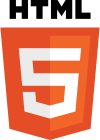
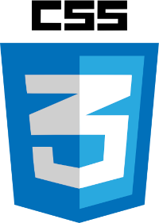

Aqui eu estou utilizando a tap <p> para fazer um paragrafo e poder escrever
Aqui estamos escrevendo um paragrafo, se quisermos quebrar esse paragrafo podemos usar a tag <br> e ficaria assim
caguei na calça
e depois me limpei
Aqui nos vamos ver como funciona o esquema de símbolos e emojis no <html>
Primeiro se a gente quiser fazer um comentário no código nos utilizamos (<! e mais dois tracos>)
Então agora vamos adicionar alguns símbolos
®
©; entre outros
Para os emojis existem sites que tem os codigos dos emojis, como por exemplo
🖖
Agora vamos ver como podemos adicionar imagens no <html>. Pegamos a imagem que queremos adicionar e colocamos na pasta que esta salvo o programa.
Depois disso utilizagemos a tag <img>.
 Para colocar uma imagem favorita (que é a imagem la na aba da pagina) precisa criar um arquivo .ico criamos uma tag em cima do <title> com o nome <link> e no href colocamos o arquivo que queremos coloar como fav.
Aqui nessa frase temos um termo em negrito usando a tag <b>
Para isso utilizamos a tag <ol> para abrir o esquema das listas, damos um enter e logo após isso, nos utilizamos a tag <li>
Podemos mudar o type, colocando type = alguma coisa na tag <ol>
Para criar uma lista não ordenada, utlizamos a tag <ul>, depois utilizamos a tag <li> geralmente para criar menus
Aqui nos utilizamos a ta <dt> para escrecer o termo e a tag <dd> para explicar oq é aquele termo, como se fosse um dicionário.
Você pode acessar o meu repositório público no GitHub
Você pode acessar meu instagram para conversar comigo e tirar duvidas
Essa é a primeira página do meu site, se quiser acessar tbm minha segunda página
Você pode acessar a pagina de notícias